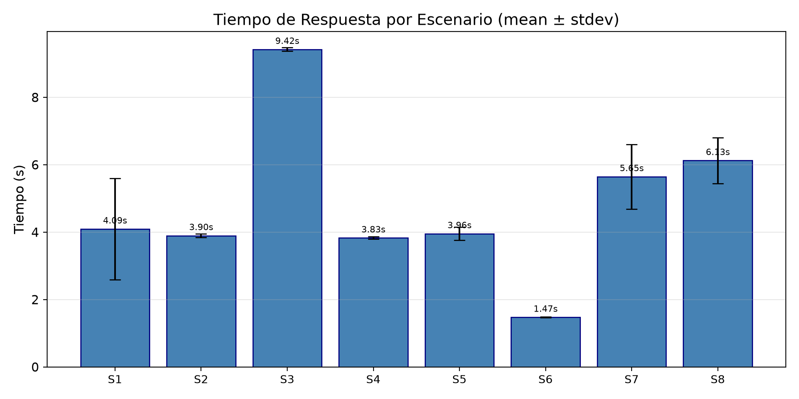
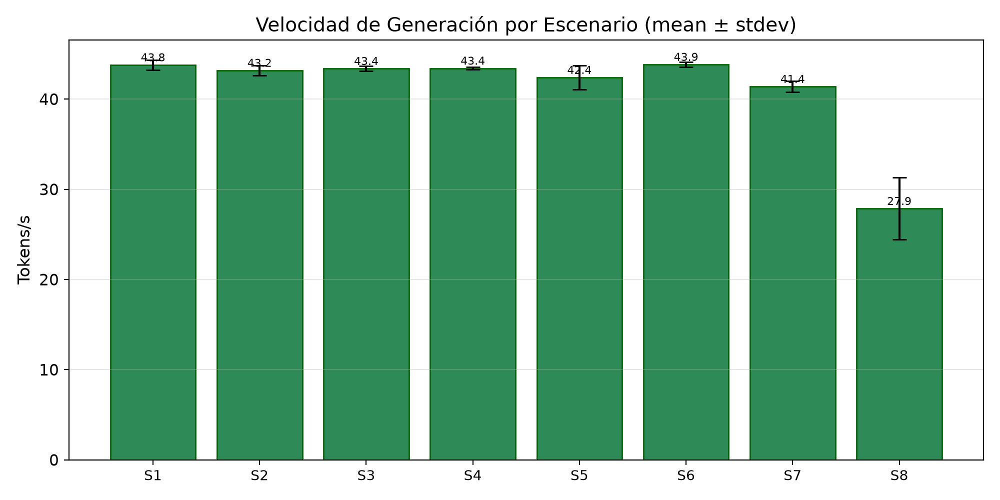
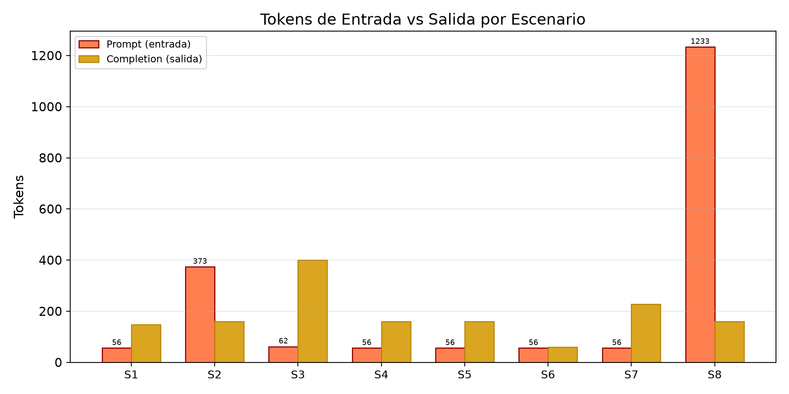
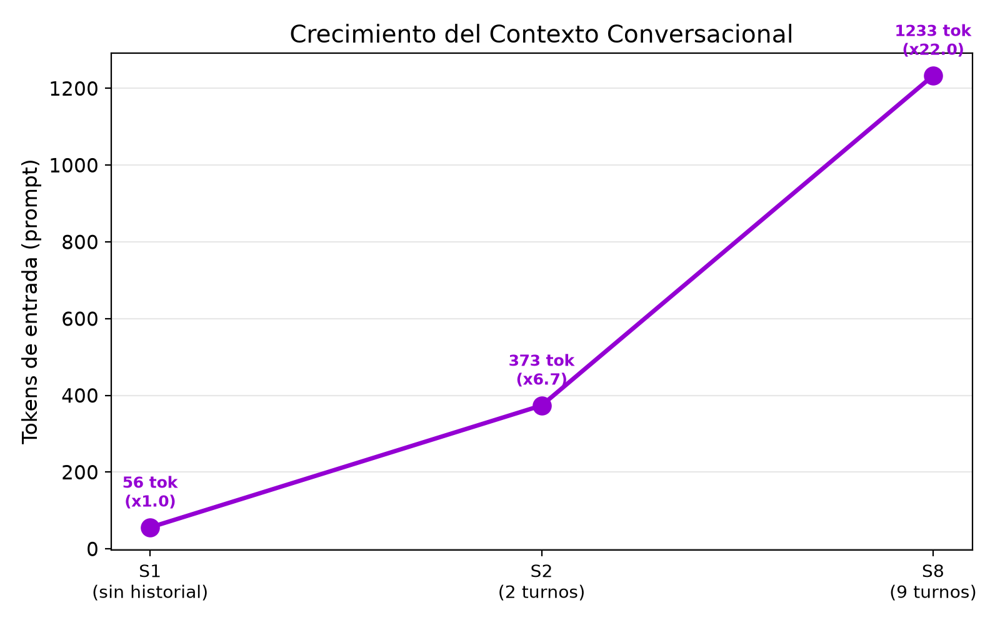
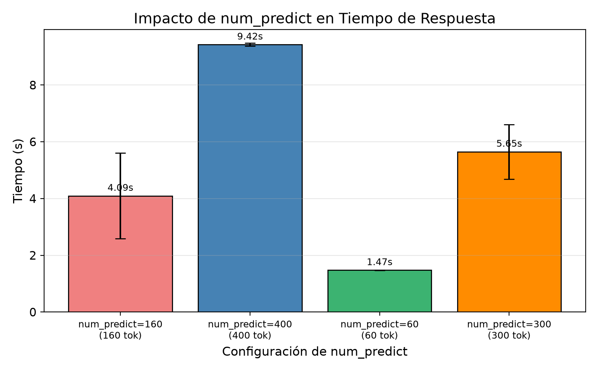

Sistema de chatbot web con gestión de contexto conversacional usando Ollama, FastAPI y SQLite
El script test_metrics_battery.py ejecutó 8 escenarios × 5 repeticiones = N = 40 invocaciones
a llama3.2:3b. Todas exitosas (40/40 ok). Parámetros por defecto:
temperature=0.7, top_p=0.9, repeat_penalty=1.1, num_ctx=4096.
| Escenario | Wall time (s) | Prompt tok | Completion tok | Total tok | Tokens/s |
|---|---|---|---|---|---|
| S1 Primer mensaje | 4.66 ± 0.39 | 56 | 160 ± 0 | 216 ± 0 | 36.98 ± 0.09 |
| S2 3.er mensaje (2 turnos) | 4.74 ± 0.08 | 373 ± 33 | 160 ± 0 | 533 ± 33 | 35.34 ± 0.52 |
| S3 Respuesta técnica (código) | 11.28 ± 0.10 | 62 | 400 ± 0 | 462 ± 0 | 36.31 ± 0.19 |
| S4 Temperatura baja (0.2) | 4.63 ± 0.12 | 56 | 160 ± 0 | 216 ± 0 | 35.98 ± 0.66 |
| S5 Temperatura alta (1.0) | 4.55 ± 0.06 | 56 | 158 ± 4 | 214 ± 4 | 36.09 ± 0.22 |
| S6 num_predict=60 | 1.82 ± 0.05 | 56 | 60 ± 0 | 116 ± 0 | 35.54 ± 0.65 |
| S7 num_predict=300 | 6.59 ± 0.90 | 56 | 221 ± 32 | 277 ± 32 | 34.47 ± 0.47 |
| S8 Turno 10 (9 turnos) | 6.12 ± 0.19 | 1275 ± 23 | 160 ± 0 | 1435 ± 23 | 27.39 ± 0.83 |
Las siguientes gráficas se generaron automáticamente al ejecutar la batería. Muestran visualmente el comportamiento del modelo en los 8 escenarios.





Las siguientes imágenes muestran el frontend en funcionamiento y las métricas que prueba el contexto conversacional. Coloca aquí tus screenshots después de ejecutar la batería y tomar las capturas.
model, temperature, top_p,
num_predict, num_ctx, repeat_penalty)
y la conversación activa con el modelo.
docs/imgs/pr3/screenshot_frontend.png
y reemplaza el contenido de esta figura.
Tokens entrada debe reflejar el historial acumulado.
docs/imgs/pr3/screenshot_metrics.png
y reemplaza el contenido de esta figura.
test_metrics_battery.py,
incluyendo el resumen de los 8 escenarios con wall time y tokens/s.
docs/imgs/pr3/screenshot_battery.png
y reemplaza esta figura.
docs/imgs/pr3/chart_*.png.
docs/imgs/pr3/screenshot_charts.png.
Es la métrica menos ruidosa (stdev entre 0.09 y 0.83). llama3.2:3b
corre cómodo en este equipo. Incluso con historial largo (S8, 1275 tokens de
entrada) la velocidad se mantiene en ~27.4 tok/s.
Comparando S1 vs S8: mismo num_predict=160 en la salida, pero
prompt_tokens sube de 56 → 1275 (×22.8).
El wall time solo sube de 4.66 s → 6.12 s (×1.3) porque el prefill del
contexto es rápido; aún así, tokens_per_second cae de
37.0 → 27.4.
S6 (=60) genera exactamente 60 tokens. S7 (=300) genera ~221 en promedio (no siempre llega al tope, depende del token EOS). S3 (=400) llena los 400 tokens completos. El wall time escala casi linealmente con la cantidad de tokens generados: 1.82 s (60 tok) → 6.59 s (221 tok) → 11.28 s (400 tok).
S4 (temp=0.2) = 4.63 s vs S5 (temp=1.0) = 4.55 s, dentro de ±2σ. La temperatura no afecta velocidad ni longitud media. Su efecto es exclusivamente sobre la variabilidad léxica de las respuestas.
| Configuración | prompt_tokens | Ratio vs S1 |
|---|---|---|
| Sin historial (S1) | 56 | 1.0× |
| 2 turnos previos (S2) | 373 | 6.7× |
| 9 turnos previos (S8) | 1275 | 22.8× |
Crecimiento promedio ≈ +135 tokens por turno previo, consistente con respuestas de ~75 tokens por par user+assistant más el system prompt.
llama3.2:3b responde en ~4–11 segundos según la
longitud de la salida, con una velocidad sostenida de 27–37 tokens/s.
No requiere GPU dedicada ni costos de API externa.
prompt_tokens crece de 56 (S1) a 1275 (S8),
demostrando que el sistema acumula y reenvía el contexto sin pérdida de
información.
num_predict de 160 a 60 baja el tiempo de respuesta
de 4.66 s a 1.82 s (×2.6 más rápido). Es el parámetro más efectivo para
ajustar la experiencia del usuario según la tarea.
temperature entre 0.2 y 1.0 no altera la velocidad
ni la longitud de las respuestas. Su utilidad es exclusivamente semántica:
mayor temperatura da respuestas más creativas; menor, más deterministas.
llama3.2:3b es
eficiente para conversaciones de hasta 10 turnos.
# 1. Instalar dependencias extra (matplotlib para gráficas) pip install matplotlib # 2. Asegurar que Ollama tenga el modelo ollama pull llama3.2:3b ollama serve & # 3. Arrancar el backend cd practicas/practica-3/backend python3 -m venv .venv source .venv/bin/activate pip install -r requirements.txt uvicorn main:app --host 127.0.0.1 --port 8000 --reload # 4. En otra terminal, ejecutar la batería desde la raíz del repo cd /ruta/al/repo python3 practicas/practica-3/test_metrics_battery.py
Al finalizar, el script imprime el resumen en terminal, guarda los JSON
en docs/assets/practica-3/ y las gráficas en
docs/imgs/pr3/chart_*.png.